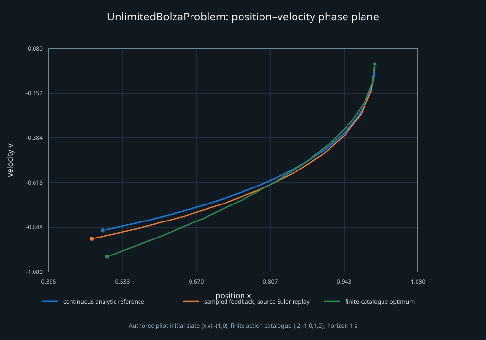

Unlimited Bolza Problem
Source-attributed double-integrator example with an analytic feedback reference, a source-step replay, and an exact finite-catalogue search.

| Track | Objective | Terminal (x, v) |
|---|---|---|
| Continuous analytic reference | 1.135557418637 | (0.49663279, -0.86378357) |
| Sampled source Euler replay | 1.184807307433 | (0.47641838, -0.90778796) |
| Finite catalogue optimum | 1.261827125000 | (0.50500000, -1.00000000) |
The finite result covers only the authored catalogue {-2,-1,0,1,2} over ten stages. It does not solve the original unbounded-control problem. Read the scope and reproduction notes, inspect the raw result and figure data, or open the standalone SVG.

Upstream source identity: pinned environment and analytic-agent file. This is supplementary to the TwoPointsOnParallelLines differential-game reachability example.